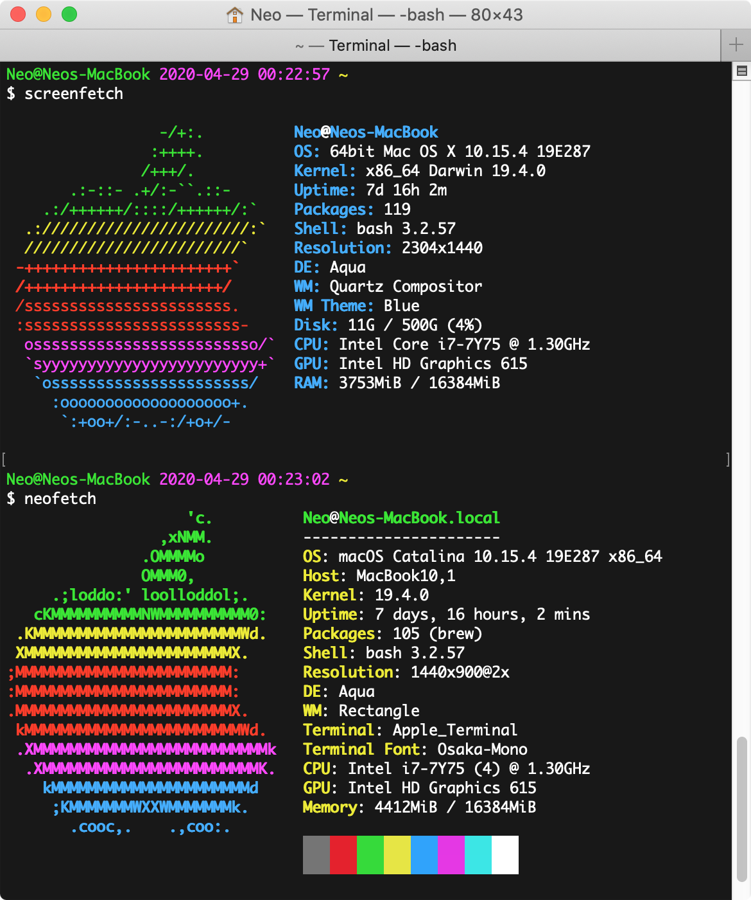
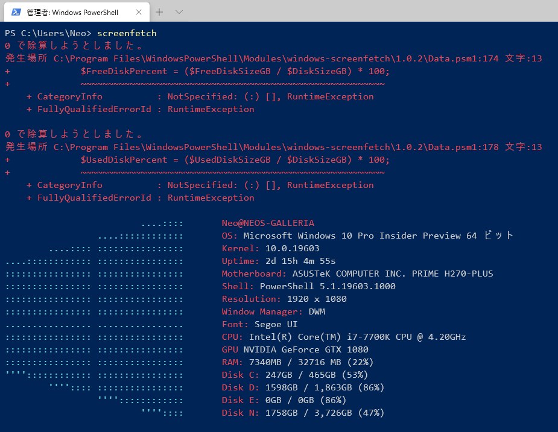
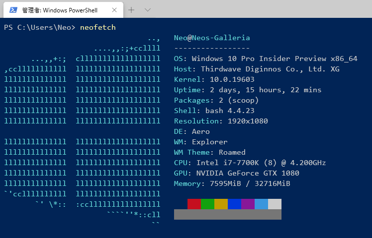
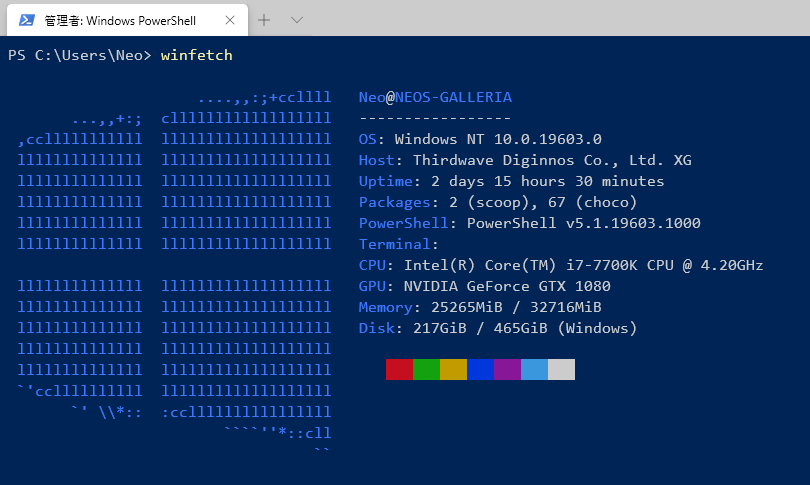

MacOS と Windows で ScreenFetch と NeoFetch を試してみる
OS 情報をイイカンジに表示してくれる screenfetch と neofetch という CLI ツールがある。自分の PC の情報なんて自分が一番知ってるから別に要らないんだけど、何となくテンションが上がるので入れてみる。
Linux 系の場合はサクッと入ると分かっているので、今回は MacOS と Windows とでインストール方法を確認してみる。
目次
- MacOS で screenfetch と neofetch を使う
- Windows で screenfetch を使う
- Windows で neofetch を使う
- オマケ：winfetch も試してみる
- 以上
MacOS で screenfetch と neofetch を使う
…といっても MacOS の場合はシンプルで、Homebrew から2つともインストールできる。
$ brew install screenfetch neofetch
$ screenfetch
$ neofetch

簡単。
Windows で screenfetch を使う
Windows の場合はそれぞれのパッケージをインストールする手順が違う。screenfetch は Windows 版があり、ワンライナーでインストールできた。
PS> Install-Module -Name windows-screenfetch
PS> screenfetch
手元で試したら、なんかゼロ除算エラーが出たけど気にしない。

Windows で neofetch を使う
neofetch が面倒だった。
scoop という、Chocolatey に似たパッケージマネージャを使うとインストールできるのだが、scoop でも Git をインストールしてやらないと、依存関係が解決できなかった。
# scoop というパッケージマネージャをインストールする
PS> Set-ExecutionPolicy RemoteSigned -scope CurrentUser
PS> iex (new-object net.webclient).downloadstring('https://get.scoop.sh')
# 依存する git パッケージと一緒にグローバルオプションを付与してインストールする
PS> scoop install --global neofetch git
PS> neofetch

オマケ：winfetch も試してみる
Windows 向けには winfetch というモノもあるみたいなので試してみた。コレも Scoop を使うので、Scoop 自体はインストールしておくこと。
PS> scoop bucket add extras
PS> scoop install winfetch
PS> winfetch

neofetch に近いかなー。
以上
やはり後発の neofetch の方が見た目はリッチかな？